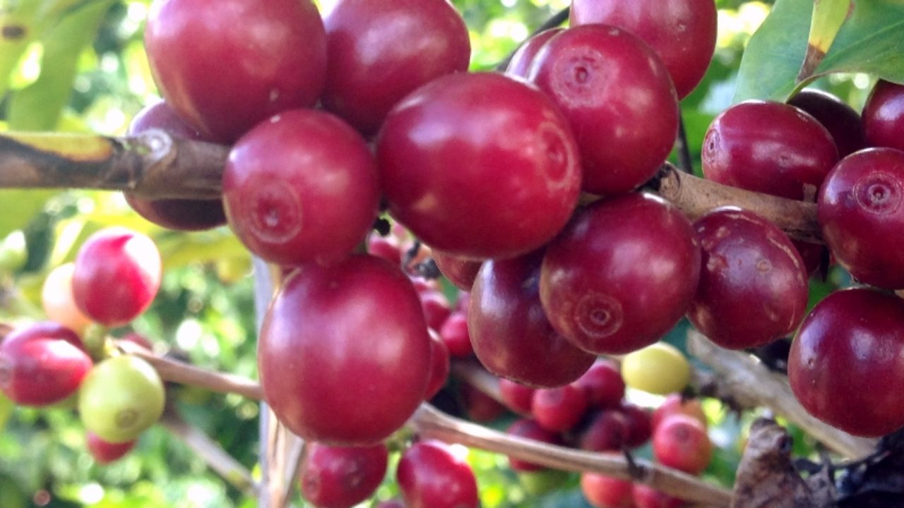
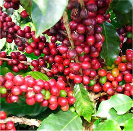

O Arábica é um café que origina outras variedades, sendo uma delas a Bourbon. Sua origem remete à Ilha de Bourbon, no leste de Madagascar. Em 1859, ele chegou em território nacional e passou a ser altamente cultivado na região do Cerrado Mineiro, em Minas Gerais.
Criado pelo IAC (Instituto Agronômico de Campinas), o Catuaí é uma espécie desenvolvida completamente em território brasileiro. Atualmente, 45% das lavouras cafeeiras produzem esta espécie.
Os estudos para que o grão surgisse começaram em 1949 e, em 1972, ele foi lançado oficialmente para os consumidores no mercado. Segundo o pesquisador Gerson Giomo, a variedade é resultado do cruzamento entre o Mundo Novo e o Caturra. Assim como o Bourbon, existe o Catuaí Vermelho e o Amarelo, sendo o primeiro mais encorpado e com amargor mais acentuado, e o segundo mais suave e delicado no paladar. O plantio do Catuaí é mais simples. O método foi desenvolvido para facilitar o cultivo para os produtores, com plantas mais baixas e mais resistentes. As plantações situadas acima de 1.000 metros geram bebidas com mais qualidade. O nome do café, inclusive, é uma homenagem aos indígenas tupis-guarani, e significa “muito bom”
O Acaiá é outra variedade do Arábica, nascida de uma mutação natural do Mundo Novo. A plantação acontece, também, acima de 800 metros do nível do mar e este tipo de grão encontrou prosperidade para se desenvolver em solo brasileiro, tendo características que não são encontradas em outras localidades. Por isso, é considerado um café especial e até raro. A fruta tende a ser bem grande e o resultado da bebida preparada com esta variedade é um café suave, com notas frutadas, corpo equilibrado e acidez mediana. É muito utilizado para criar blends poderosos e saborosos, sempre combinados com tipos de grãos mais fortes.